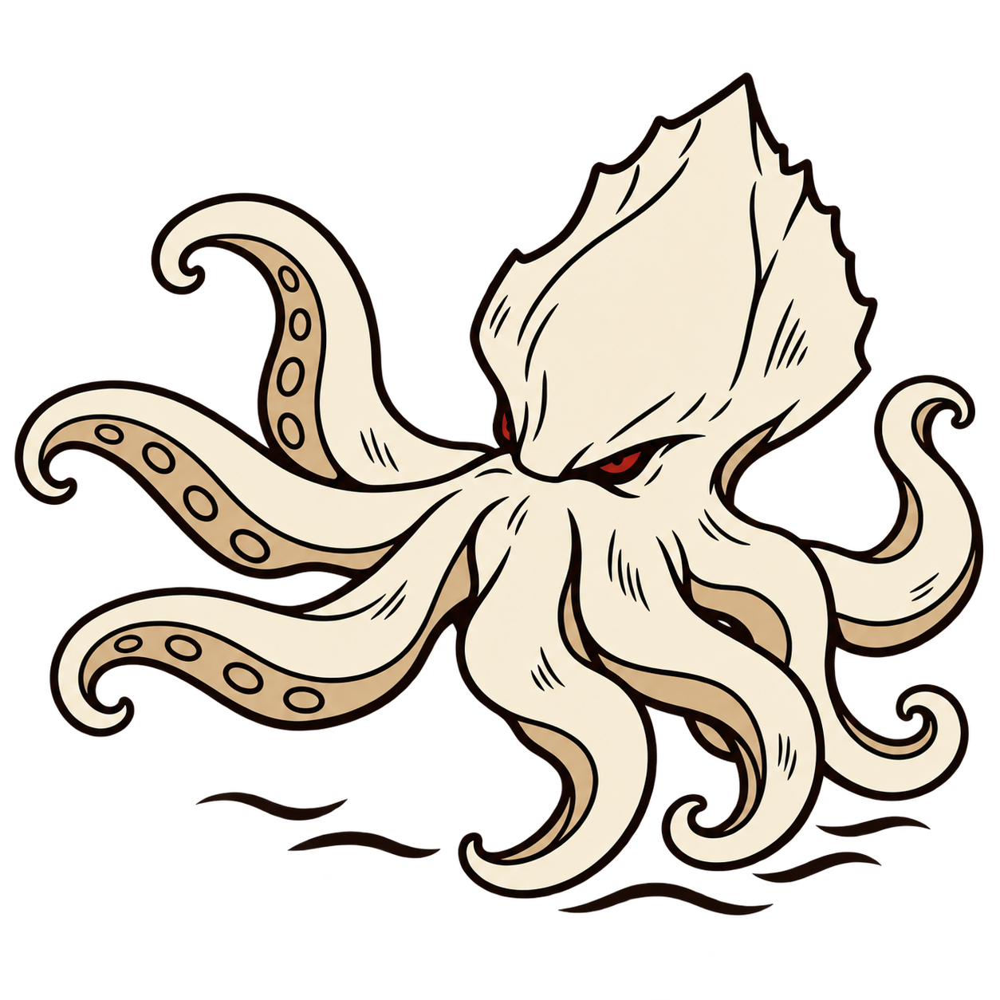
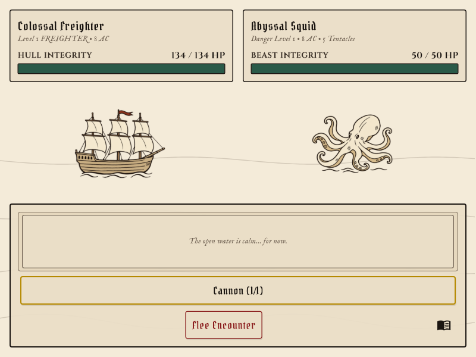
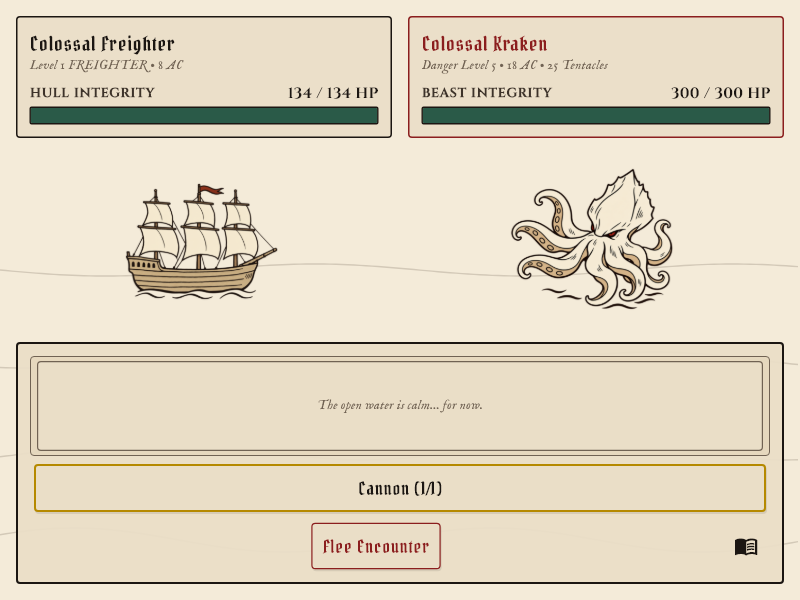
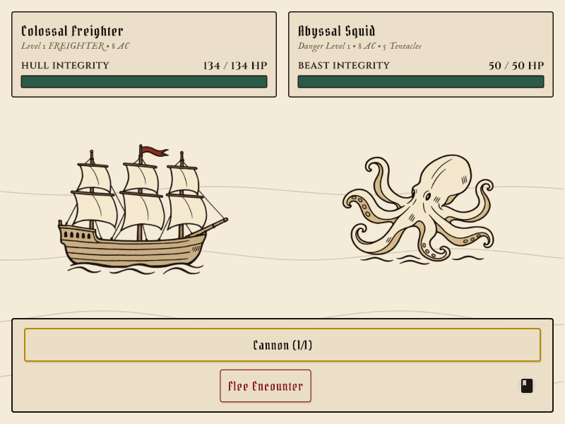
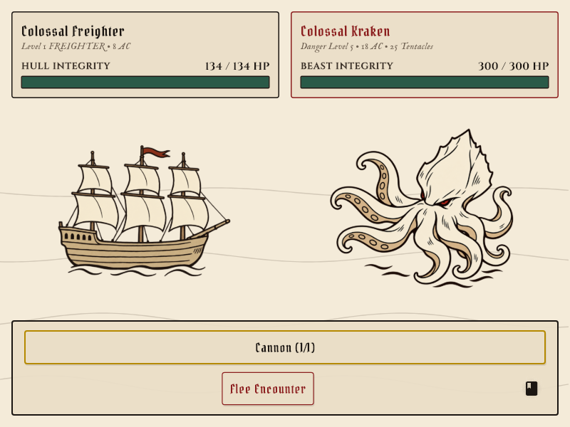

The rounded, softly curled design is the ordinary squid. The Kraken keeps its jagged mantle and narrow crimson eyes, now turned toward the ship on the left. A smooth collar separates the eyes from the arm roots, and the leading arms reach left. Both use the same broad ink lines and quiet cream/tan fills.





Exact edit prompt and asset path · Original squid/boss decision · Earlier simple pilot